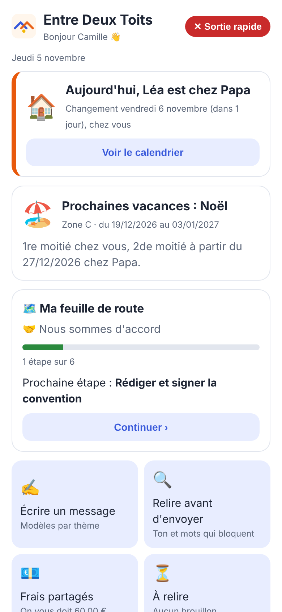
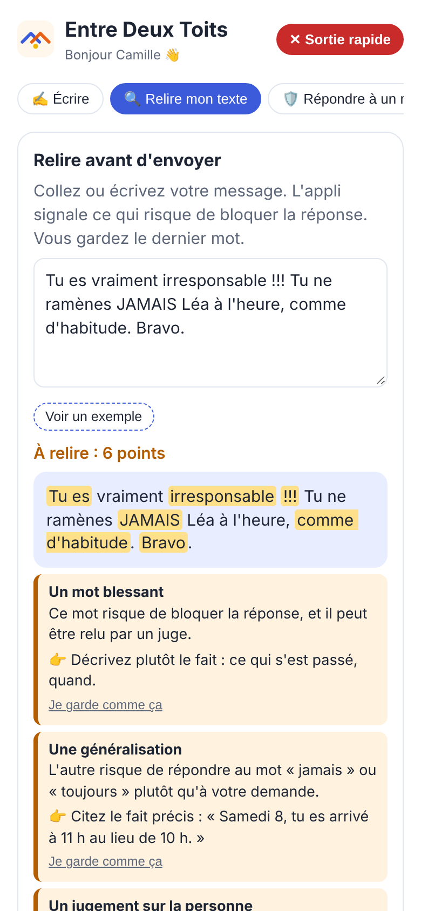
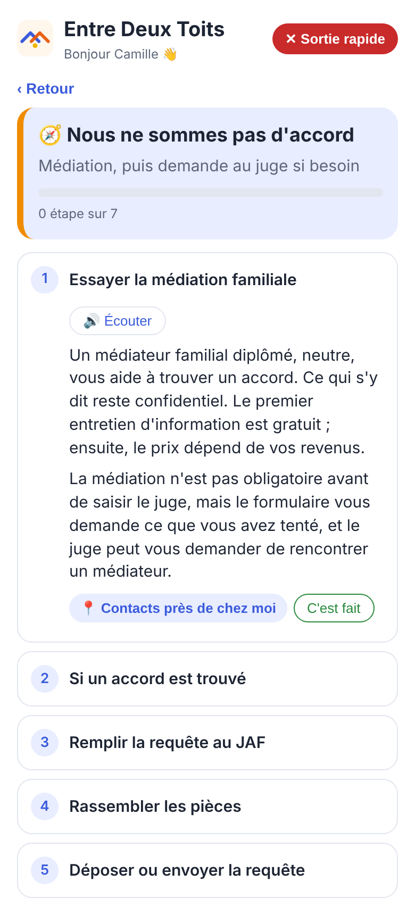
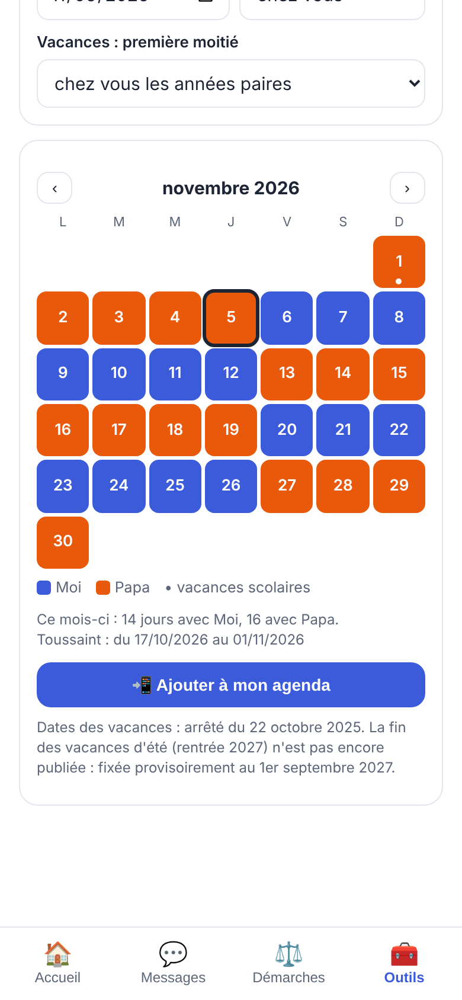
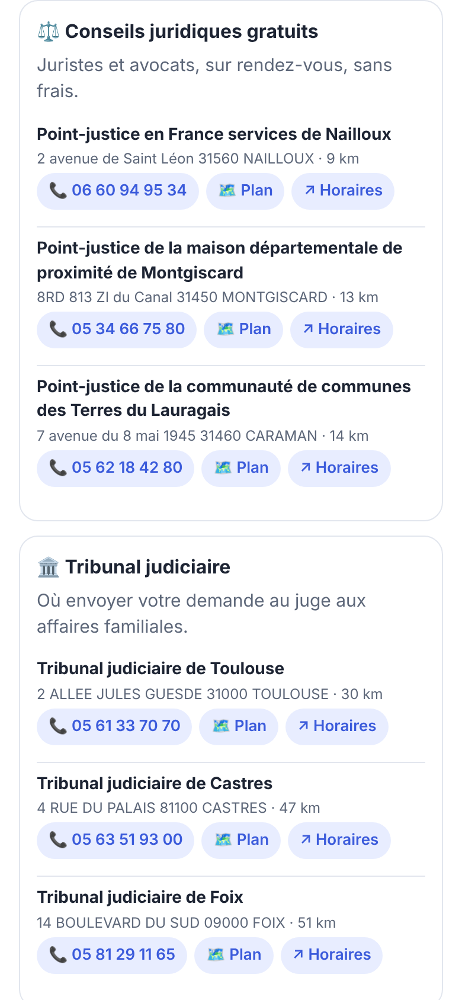

L'appli gratuite qui aide les parents séparés à s'organiser, à se parler sans conflit et à faire leurs démarches, pour que les enfants vivent bien entre deux maisons.
Sur ordinateur ?
Scannez ce code avec l'appareil photo de votre téléphone pour ouvrir l'appli.

Messages, démarches, calendrier, contacts : découvrez l'appli en vidéo. Les sous-titres sont intégrés, vous pouvez la regarder sans le son.
Ouvrir l'appliPour les parents qui se séparent ou qui sont déjà séparés, et pour les professionnels qui les accompagnent.
Des modèles prêts à remplir (santé, école, vacances, frais), et une relecture qui signale les mots qui bloquent la réponse, avant d'envoyer.

Médiation, convention parentale, demande au juge aux affaires familiales, avocat et aide juridictionnelle, pension : les étapes dans l'ordre, avec les formulaires officiels.

Garde alternée ou week-ends, vacances scolaires de votre zone partagées automatiquement, et ajout à l'agenda du téléphone.

Points-justice gratuits, tribunal, CAF, aide aux victimes, France services : les plus proches de chez vous, partout en France, même sans connexion.

Pas de compte à créer, pas de cookie : rien de ce que vous écrivez n'est envoyé à un serveur. Personne d'autre que vous ne le voit.
Pas besoin de l'App Store ni du Play Store : l'appli s'ajoute directement à l'écran d'accueil, comme une application classique.
Conseil : au premier lancement, choisissez un code dans Outils › Coffre-fort. Vos messages, frais et documents seront chiffrés.